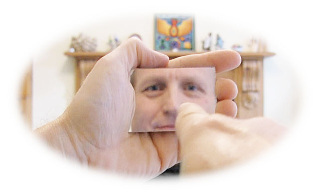
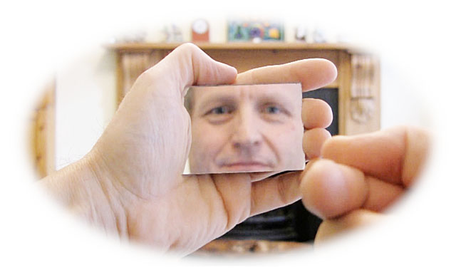
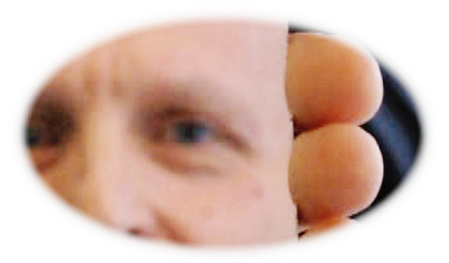
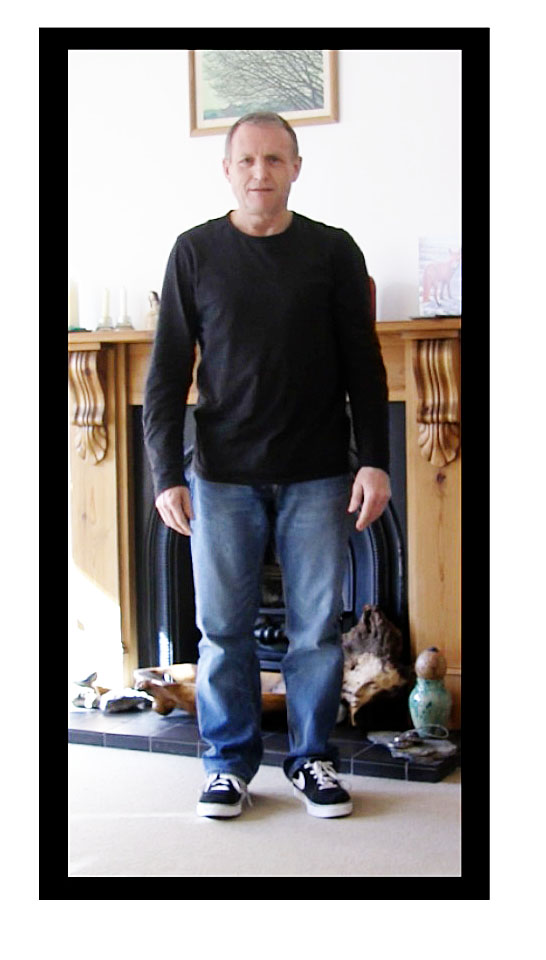
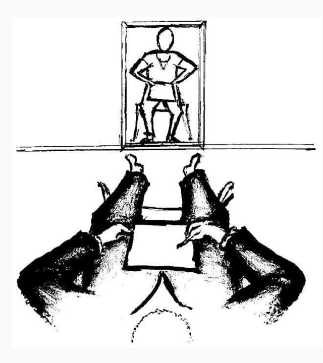
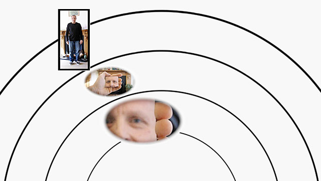
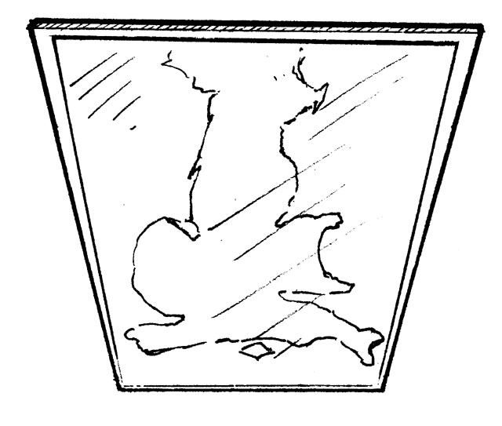
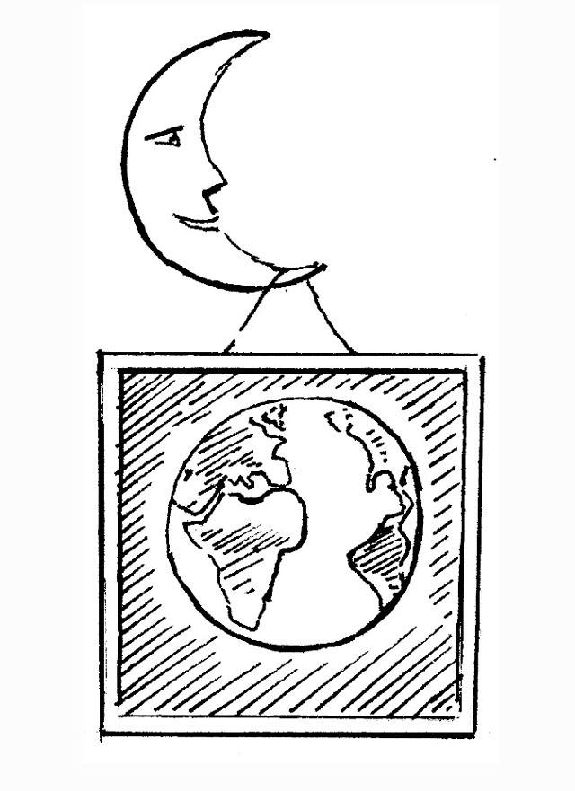
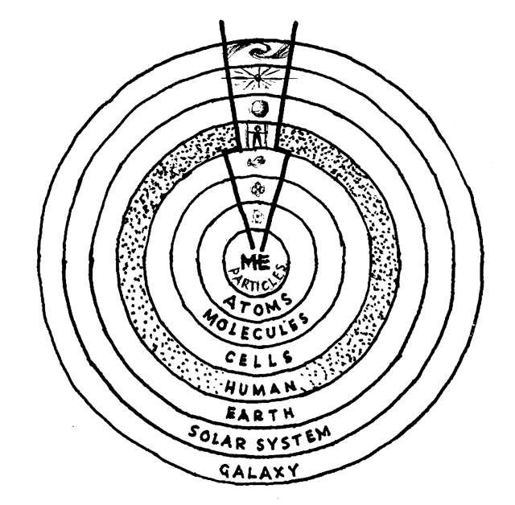

‘But what about the mirror? I can see my face there.’
When you look in a mirror you see not only what your face looks like but also where it is – it’s there in the mirror, not here above your chest. Find a mirror and see where your face is – it’s about a meter away!
Is there a second face on your side of the mirror?
When I look in a mirror I see my face there but I find no face on my side of the glass. Here I am free of my face. I am not what I look like. I am capacity here for my appearance there. Are you the same?
If you bring the mirror towards you, you see different images. These are still reflections of you, though the mirror contains less of your face: first you see all your face, then an eye, finally a blur…
If you could bring the mirror closer it would reveal closer layers: cells, molecules, atoms… Obviously you cannot do this. Nor can you bring it even closer to see what you are at centre. The mirror shows you what you are at arm’s length but not what you are at zero distance. It reveals your regional appearances but not your central reality.
Look in a full-length mirror placed a few metres away. Now your whole body is on show, out there at the range where it belongs.
It manifests there (not here). If others want to see your whole body, then they must look at you from the same distance as that mirror – much closer and you grow so big that parts of you vanish; much further away and you grow so small that you vanish into your surroundings.
In other words, there’s a zone around you where you appear human, both to others and to yourself in the mirror.
Imagine placing mirrors at greater distances. First, imagine a huge mirror in the sky. You would still see your appearance there but the image would no longer be of a person. Depending on where you live you might see England, France, the USA, China… You are looking at your national face.
Now imagine a mirror on the moon. There’s your beautiful planetary face.
Imagine a mirror on a nearby star and discover what you are from that distance. Yes, you’re a star!
Finally imagine a mirror on a neighbouring galaxy. Now you are a spiral galaxy!
What an astonishing, many-levelled body you have! And you thought you were only human!
